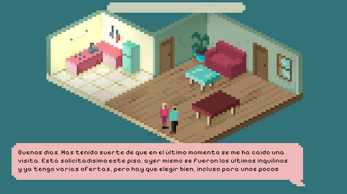
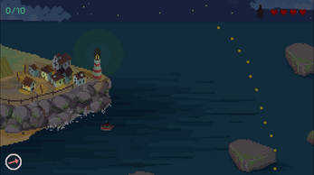

Turistifyer
Ficción interactiva e satírica na que te converterte no turista perfecto para enganar o caseiro e conseguir piso na Cidade Vella da Coruña. Sobrevivir tamén é actuar.
Itch.io — navegador — gratis Xogar en itch.ioFlorilexio é unha aventura de exploración e recolleita para quen saíu unha vez a por camomila e volveu tres horas despois cunha maldición e un amigo novo.

Un adianto de que se sente perderse a propósito.

O mapa de Florilexio non che colle da man. Detrás de cada muro de pedra, cada claro raro e cada porta que «seguro que non leva a ningures» hai unha historia agardando — e ás veces, alguén agardando a que deixes de fisgar.
Wishlist en SteamRecolle, seca, mestura, ou simplemente cárgaa no cesto mentres decides se de verdade queres saber para que serve. O ciclo de saír, explorar e volver premia a curiosidade tanto coma a paciencia.
Wishlist en Steam
Cada feitizo mal calculado, cada ingrediente confundido e cada segredo desenterrado ten consecuencias — case nunca as que agardabas, case sempre motivo dunha boa anécdota.
Wishlist en Steam«Un pequeno Florilexio» é o prototipo gratuíto que sentou as bases do xogo completo — dispoñible agora mesmo en itch.io, sen esperas nin listaxes de desexos.

+ máis capturas moi pronto
Engancháchete ao ciclo de saír, recoller e volver de Dredge — pero preferirías que o que agocha na escuridade sexa unha cabra con moi mala leite en vez dun horror cósmico.
De pequeno (ou non tan pequeno) perdícheste horas no mapa de A Link to the Past buscando a última cova secreta, e aínda non o superaches.
Se algunha das dúas che sacou un sorriso, Florilexio é para ti.
Proximamente — ou iso esperamos.
[Aquí vai a historia real: quen sodes, cantos sodes, onde estades, e por que decidistes que un xogo sobre recoller herba de San Xoán con moi mala sorte era unha boa idea. Esta sección funciona mellor se sodes vós de verdade — co mesmo ton e humor que o resto da web — e non unha biografía xenérica de estudo.]
Florilexio non é o único que facemos. Isto é o demais — por se che gustou o noso rollo.

Ficción interactiva e satírica na que te converterte no turista perfecto para enganar o caseiro e conseguir piso na Cidade Vella da Coruña. Sobrevivir tamén é actuar.
Itch.io — navegador — gratis Xogar en itch.io
O Sentulo sae cada noite pescar polbo, choco e robaliza nas Rías Baixas. Hai noites sen lúa nas que cae outra cousa na rede — e só unha caña de augardente pode axudarlle a plantarlle cara ao monstro que levou o seu pai hai vinte anos.
Itch.io — Windows / Linux — gratis Xogar en itch.io[Plataformas por confirmar — Steam (PC) previsto]
[Data de lanzamento por confirmar]
[Prezo por confirmar]
[Idiomas por confirmar]
Descarga capturas en alta resolución, o logo do estudo e unha folla de datos do xogo.
Descargar press kit